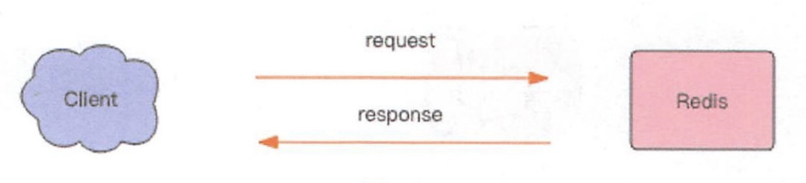
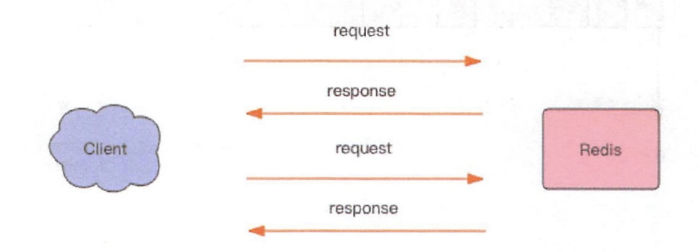
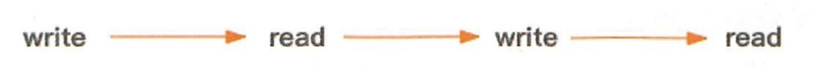
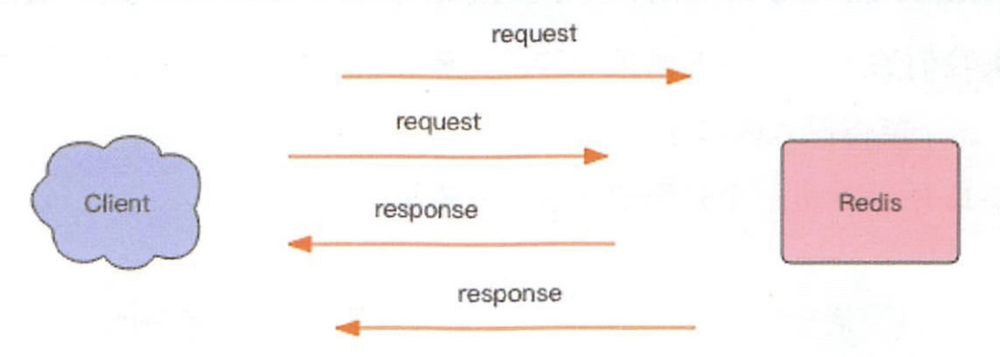
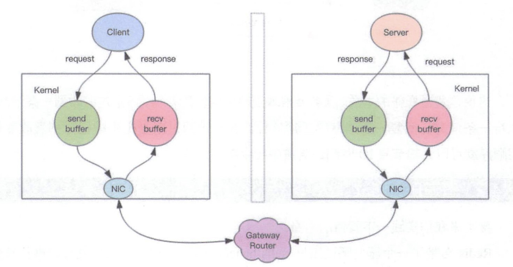

Redis Pipeline本身并不是Redis服务端提供的技术，而是由客户端提供的。
Redis消息交互
当我们使用客户端对Redis进行一次操作时。客户端将请求传送给服务器，服务器处理完毕之后，再将相应回复给客户端。这花费一个网络数据包来回的时间。

如果连续执行多条指令，那就会花费多个网络数据包来回的时间。

回到客户端代码层面，客户端是经历了 写-读-写-读 四个操作才完整地执行了两条指令。

如果我们调整读写顺序，改成 写-写-读-读 这两个指令同样可以正常完成。
两个连续的写操作和两个连续的读操作总共只会花费一次网络来回的时间，就好像连续的写操作合并了，连续的读操作也合并了一样。

这边是管道操作的本质，服务器根本没有任何区别对待。还是收到一条消息、执行一条消息、恢复一条消息的正常流程。客户端通过对管道中的指令列表该表读写顺序就可以大幅节省IO时间。管道中指令越多，效果越好。
压力测试
Redis自带了一个压力测试工具redis-benchmark，使用这个工具就可以进行管道测试。
首先我们对一个普通的 set 指令进行压测，QPS 大约 5w/s。以下命令在bash中执行，非redis-cli。
> redis-benchmark -t set -q
SET: 51975.05 requests per second
我们加入管道选项-P参数，它表示单个管道内并行的请求数量，看下面P=2，QPS 达到了 9w/s。
> redis-benchmark -t set -P 2 -q
SET: 91240.88 requests per second
再看看P=3，QPS 达到了 10w/s。
SET: 102354.15 requests per second
但如果再继续提升 P 参数，发现 QPS 已经上不去了。这是为什么呢？
> redis-benchmark -t set -P 20 -q
SET: 729927.06 requests per second
> redis-benchmark -t set -P 40 -q
SET: 1000000.00 requests per second
> redis-benchmark -t set -P 80 -q
SET: 1219512.12 requests per second
> redis-benchmark -t set -P 100 -q
SET: 1250000.00 requests per second
> redis-benchmark -t set -P 200 -q
SET: 1408450.62 requests per second
> redis-benchmark -t set -P 400 -q
SET: 1176470.62 requests per second
因为这里 CPU 处理能力已经达到了瓶颈，Redis 的单线程 CPU 已经飙到了 100%，所以无法再继续提升了。
深入理解管道本质

- 客户端进程调用
write将消息写到操作系统内核为套接字分配的发送缓冲send buffer。 - 客户端操作系统内核，将发送缓冲的内容发送到网卡，网卡硬件将数据通过「网际路由」送到服务器的网卡。
- 服务器操作系统内核将网卡的数据放到内核为套接字分配的接收缓冲
recv buffer。 - 服务器进程调用
read从接收缓冲中取出消息进行处理。 - 服务器进程调用
write将响应消息写到内核为套接字分配的发送缓冲send buffer。 - 服务器操作系统内核将发送缓冲的内容发送到网卡，网卡硬件将数据通过「网际路由」送到客户端的网卡。
- 客户端操作系统内核将网卡的数据放到内核为套接字分配的接收缓冲
recv buffer。 - 客户端进程调用
read从接收缓冲中取出消息返回给上层业务逻辑进行处理。 - 结束。
其中步骤 5~8 和 1~4 是一样的，只不过方向是反过来的，一个是请求，一个是响应。
我们开始以为 write 操作是要等到对方收到消息才会返回，但实际上不是这样的。write 操作只负责将数据写到本地操作系统内核的发送缓冲然后就返回了。剩下的事交给操作系统内核异步将数据送到目标机器。但是如果发送缓冲满了，那么就需要等待缓冲空出空闲空间来，这个就是写操作 IO 操作的真正耗时。
我们开始以为 read 操作是从目标机器拉取数据，但实际上不是这样的。read 操作只负责将数据从本地操作系统内核的接收缓冲中取出来就了事了。但是如果缓冲是空的，那么就需要等待数据到来，这个就是读操作 IO 操作的真正耗时。
所以对于value = redis.get(key)这样一个简单的请求来说，write操作几乎没有耗时，直接写到发送缓冲就返回，而read就会比较耗时了，因为它要等待消息经过网络路由到目标机器处理后的响应消息,再回送到当前的内核读缓冲才可以返回。这才是一个网络来回的真正开销。
而对于管道来说，连续的write操作根本就没有耗时，之后第一个read操作会等待一个网络的来回开销，然后所有的响应消息就都已经回送到内核的读缓冲了，后续的 read 操作直接就可以从缓冲拿到结果，瞬间就返回了。
小结
这就是管道的本质了，它并不是服务器的什么特性，而是客户端通过改变了读写的顺序带来的性能的巨大提升。
本文由 Sajor
创作，采用 知识共享署名4.0 国际许可协议进行许可
本站文章除注明转载/出处外，均为本站原创或翻译，转载前请务必署名
最后编辑时间为: 2022-03-14T13:39:06+08:00